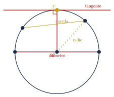
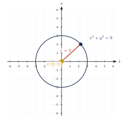
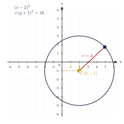
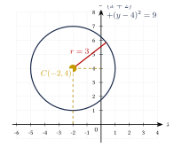

Capítulo 33
Circunferencia
UNAM IPN CENEVAL
La circunferencia es uno de los lugares geométricos fundamentales de la geometría analítica. Su ecuación describe todos los puntos del plano que se encuentran a una distancia constante de un punto fijo.
En este capítulo estudiarás la ecuación de una circunferencia con centro en el origen y con centro fuera del origen. También aprenderás a transformar su ecuación general en forma ordinaria, identificar su centro y su radio, y determinar si una ecuación representa una circunferencia real.
33.1 Definición y elementos#
La circunferencia es el conjunto de todos los puntos del plano que se encuentran a una distancia constante de un punto fijo.
El punto fijo se denomina centro y la distancia constante recibe el nombre de radio.
Si el centro es:
y el radio es un número positivo \(r\), entonces la circunferencia puede expresarse como el lugar geométrico:
La circunferencia y el círculo no son exactamente la misma figura.
- La circunferencia está formada únicamente por los puntos que se encuentran a distancia \(r\) del centro.
- El círculo contiene la circunferencia y todos sus puntos interiores.
Los principales elementos relacionados con una circunferencia son:
- Centro: punto fijo del que todos los puntos de la circunferencia equidistan.
- Radio: segmento que une el centro con cualquier punto de la circunferencia.
- Diámetro: cuerda que pasa por el centro. Su longitud es: \[d=2r.\]
- Cuerda: segmento cuyos extremos pertenecen a la circunferencia.
- Secante: recta que interseca la circunferencia en dos puntos.
- Tangente: recta que tiene un solo punto en común con la circunferencia.
- Punto de tangencia: punto común entre la circunferencia y una recta tangente.
El radio trazado hasta el punto de tangencia es perpendicular a la recta tangente.
Si \(T\) es el punto de tangencia y \(\ell\) es la recta tangente, entonces:
Los elementos principales pueden observarse en la siguiente figura:

33.2 Deducción de la ecuación de la circunferencia#
Sea:
el centro de una circunferencia de radio \(r\), y sea:
un punto cualquiera de la circunferencia.
Por definición:
Utilizamos la fórmula de la distancia:
Elevamos ambos miembros al cuadrado:
La circunferencia con centro:
y radio positivo \(r\) tiene ecuación:
Los signos de las coordenadas del centro aparecen invertidos dentro de los paréntesis.
Por ejemplo:
Por tanto, el centro correspondiente es:
33.3 Circunferencia con centro en el origen#
Si el centro de la circunferencia es el origen:
la ecuación ordinaria se reduce a:
Esta expresión se denomina forma canónica.
Encuentra la ecuación de la circunferencia cuyo centro es el origen y cuyo radio es:
Ver solución
Utilizamos:
Sustituimos:
Por tanto:

La circunferencia:
interseca los ejes coordenados en:
33.4 Circunferencia con centro en \((h,k)\)#
Encuentra la ecuación de la circunferencia con centro:
y radio:
Ver solución
Utilizamos:
Sustituimos:
Simplificamos:

Encuentra el centro y el radio de:
Ver solución
Comparamos con:
Como:
se tiene:
Además:
y:
Como el radio es una longitud:
Por tanto:
y:
La ventana de la siguiente gráfica se ajusta para mostrar la circunferencia completa:

33.5 Interpretación como una traslación#
La circunferencia:
tiene centro en el origen.
Al sustituir \(x\) por \(x-h\) y \(y\) por \(y-k\), obtenemos:
Esta transformación desplaza el centro desde:
hasta:
En la ecuación:
se tiene:
- si \(h>0\), el centro se desplaza hacia la derecha;
- si \(h<0\), el centro se desplaza hacia la izquierda;
- si \(k>0\), el centro se desplaza hacia arriba;
- si \(k<0\), el centro se desplaza hacia abajo;
- el radio continúa siendo \(r\).
33.6 Forma general de la circunferencia#
Partimos de la forma ordinaria:
Desarrollamos los cuadrados:
Reordenamos:
Si definimos:
y:
obtenemos la forma general.
La ecuación general de una circunferencia es:
Los coeficientes de \(x^2\) y \(y^2\) son iguales y no aparece el término \(xy\).
En la ecuación:
el centro es:
y el cuadrado del radio es:
Por tanto:
Para identificar una circunferencia en forma general deben cumplirse estas condiciones:
- aparecen los términos \(x^2\) y \(y^2\);
- ambos términos cuadráticos tienen el mismo coeficiente y el mismo signo;
- no aparece un término de la forma \(xy\).
Si toda la ecuación está multiplicada por una constante distinta de cero, primero puede dividirse entre esa constante.
Encuentra el centro y el radio de:
Ver solución
Identificamos:
El centro es:
Por tanto:
Calculamos el radio:
Por tanto:
y:
La ventana se adapta para mostrar la circunferencia completa:

33.7 Transformación de la forma general a la forma ordinaria#
Aunque las fórmulas anteriores permiten calcular directamente el centro y el radio, completar cuadrados muestra de manera explícita la forma ordinaria de la circunferencia.
Para completar el cuadrado de una expresión:
se suma:
Entonces:
Cuando se añade una cantidad a un miembro de una ecuación, debe añadirse la misma cantidad al otro miembro para conservar la igualdad.
Transforma la ecuación:
a su forma ordinaria. Determina el centro y el radio.
Ver solución
Agrupamos los términos correspondientes a cada variable:
Para completar el primer cuadrado, calculamos:
Para el segundo:
Sumamos estas cantidades a ambos miembros:
Factorizamos:
Por tanto, la forma ordinaria es:
El centro es:
y el radio es:

Transforma la ecuación:
a su forma ordinaria.
Ver solución
Agrupamos:
Completamos cuadrados:
Factorizamos:
Por tanto:
El centro es:
y el radio es:
33.8 Existencia de la circunferencia#
Después de completar cuadrados, una ecuación puede adoptar la forma:
El valor de \(R\) determina el tipo de conjunto representado.
En la ecuación:
se presentan tres casos:
- Si: \[R>0,\] la ecuación representa una circunferencia real de radio: \[r=\sqrt{R}.\]
- Si: \[R=0,\] la ecuación representa únicamente el punto: \[(h,k).\] Este caso se denomina circunferencia degenerada o circunferencia de radio cero.
- Si: \[R<0,\] la ecuación no tiene soluciones reales y no representa una circunferencia real.
Determina si:
representa una circunferencia real.
Ver solución
Agrupamos:
Completamos cuadrados:
Por tanto:
El miembro izquierdo es una suma de cuadrados y no puede ser negativo para valores reales de \(x\) y \(y\).
Por tanto, la ecuación:
En la forma general:
el valor:
cumple la función de \(r^2\).
La ecuación representa una circunferencia real no degenerada si:
33.9 Posición de un punto respecto de una circunferencia#
Sea una circunferencia de centro \(C\) y radio \(r\), y sea \(P\) un punto del plano.
La posición de \(P\) puede determinarse comparando:
con el radio.
Un punto \(P\) es:
- interior si: \[d(P,C)<r;\]
- perteneciente a la circunferencia si: \[d(P,C)=r;\]
- exterior si: \[d(P,C)>r.\]
Para evitar raíces cuadradas, también pueden compararse los cuadrados:
y:
Determina la posición del punto:
respecto de la circunferencia:
Ver solución
Sustituimos las coordenadas del punto:
Como el resultado es igual a \(r^2\), el punto pertenece a la circunferencia:
33.10 Circunferencia determinada por los extremos de un diámetro#
Sean:
y:
los extremos de un diámetro.
El centro es el punto medio:
El radio es la mitad de la distancia entre los extremos:
Encuentra la ecuación de la circunferencia cuyo diámetro tiene extremos:
y:
Ver solución
Calculamos el punto medio:
Calculamos la longitud del diámetro:
Por tanto, el radio es:
La ecuación es:
33.11 Resumen de fórmulas#
Las fórmulas principales del capítulo son:
Centro en el origen
\[x^2+y^2=r^2.\]Centro en \((h,k)\)
\[(x-h)^2+(y-k)^2=r^2.\]Forma general
\[x^2+y^2+Dx+Ey+F=0.\]Centro desde la forma general
\[C\left( -\frac{D}{2}, -\frac{E}{2} \right).\]Radio desde la forma general
\[r = \sqrt{ \frac{D^2+E^2}{4}-F }.\]Centro a partir de un diámetro
\[C = \left( \frac{x_1+x_2}{2}, \frac{y_1+y_2}{2} \right).\]Radio a partir de un diámetro
\[r = \frac{1}{2} \sqrt{ (x_2-x_1)^2+(y_2-y_1)^2 }.\]
33.12 Errores frecuentes#
Al trabajar con ecuaciones de circunferencias, evita los siguientes errores:
- Leer incorrectamente el centro. En: \[(x+3)^2+(y-2)^2=25,\] el centro es: \[(-3,2),\] no \((3,-2)\).
- Confundir \(r\) con \(r^2\). Si: \[r^2=25,\] entonces: \[r=5.\]
- Omitir cantidades al completar cuadrados.
- Sumar una cantidad a un solo miembro de la ecuación.
- Considerar que una ecuación con \(r^2<0\) representa una circunferencia real.
- Confundir el círculo con la circunferencia.
- Dibujar una circunferencia sin comprobar que la ventana gráfica contiene su centro y sus cuatro puntos extremos.
33.13 Ejercicios propuestos#
Encuentra la ecuación de la circunferencia con centro en el origen y radio:
Ver solución
Encuentra la ecuación de la circunferencia con centro:
y radio:
Ver solución
Encuentra el centro y el radio de:
Ver solución
Comparando con \((x - h)^2 + (y - k)^2 = r^2\): \[h = 4, \quad k = -1, \quad r = 6.\] Centro \(C(4, -1)\), radio \(r = 6\).
Encuentra el centro y el radio de:
Ver solución
\(D = -8\), \(E = 2\), \(F = -8\). \[h = -\frac{-8}{2} = 4, \qquad k = -\frac{2}{2} = -1.\] \[r = \sqrt{4^2 + (-1)^2 - (-8)} = \sqrt{16 + 1 + 8} = \sqrt{25} = 5.\] Centro \(C(4, -1)\), radio \(r = 5\).
Transforma la ecuación:
a su forma ordinaria y determina su centro y su radio.
Ver solución
Agrupamos y completamos TCP: \[(x^2 - 6x) + (y^2 - 4y) = 3.\] \[(x^2 - 6x + 9) + (y^2 - 4y + 4) = 3 + 9 + 4.\] \[(x - 3)^2 + (y - 2)^2 = 16.\] Centro \(C(3, 2)\), radio \(r = 4\).
Determina si la ecuación:
representa una circunferencia real. Justifica tu respuesta.
Ver solución
\(D = 2\), \(E = 4\), \(F = 10\). \[h = -1, \qquad k = -2.\] \[h^2 + k^2 - F = 1 + 4 - 10 = -5 < 0.\] Como \(h^2 + k^2 - F\) es negativo, la ecuación no representa una circunferencia real.
Determina la posición del punto:
respecto de la circunferencia:
Ver solución
Sustituimos \(P(7, 2)\) en \((x-3)^2+(y+1)^2\): \[(7-3)^2 + (2+1)^2 = 4^2 + 3^2 = 16 + 9 = 25.\] Como el resultado es igual al radio al cuadrado (\(25=25\)), el punto pertenece a la circunferencia.
Encuentra la ecuación de la circunferencia cuyo diámetro tiene extremos:
y:
Ver solución
El centro es el punto medio del diámetro: \[C = \left( \frac{-4+2}{2}, \frac{-1+7}{2} \right) = (-1, 3).\] La longitud del diámetro es: \[d = \sqrt{(2 - (-4))^2 + (7 - (-1))^2} = \sqrt{6^2 + 8^2} = \sqrt{36+64} = 10.\] Por lo tanto, el radio es \(r = 5\). La ecuación es: \[(x+1)^2 + (y-3)^2 = 25.\]